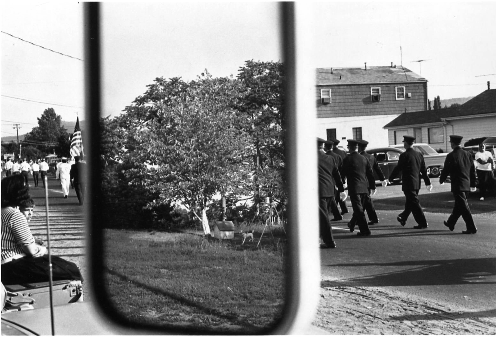
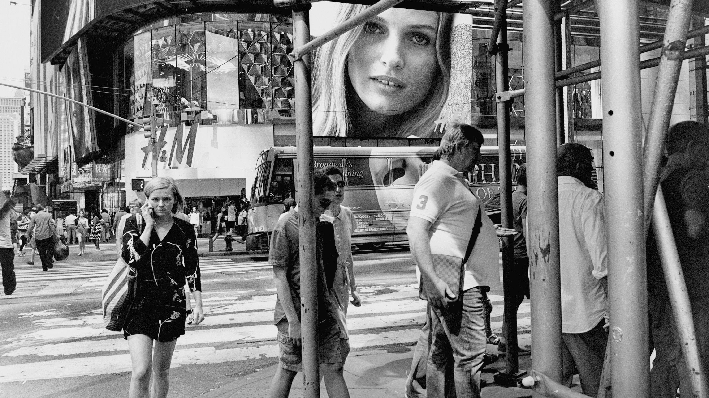
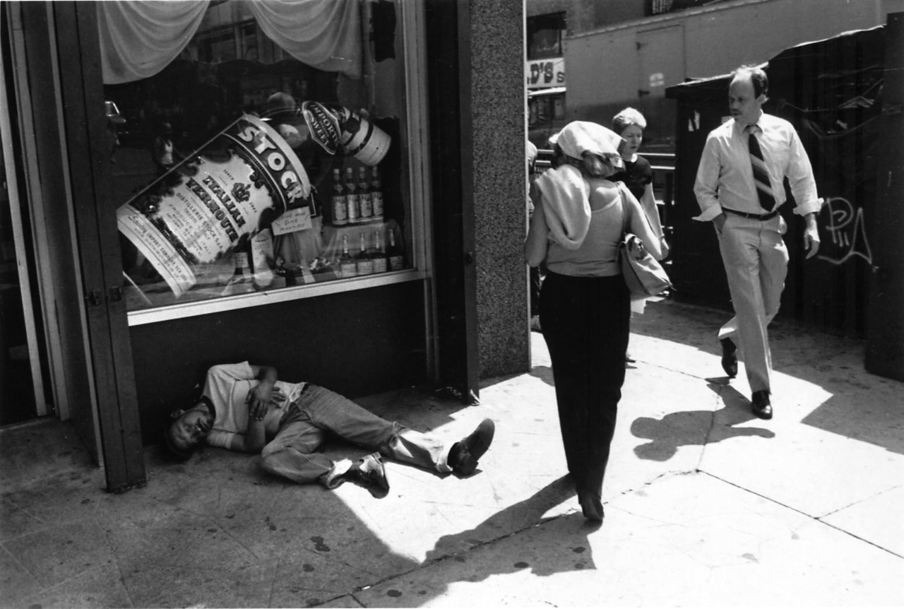
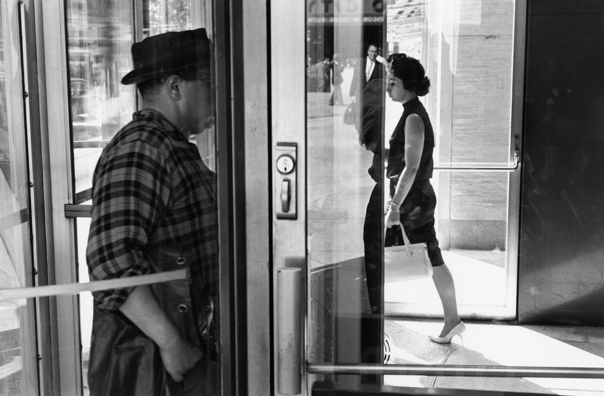
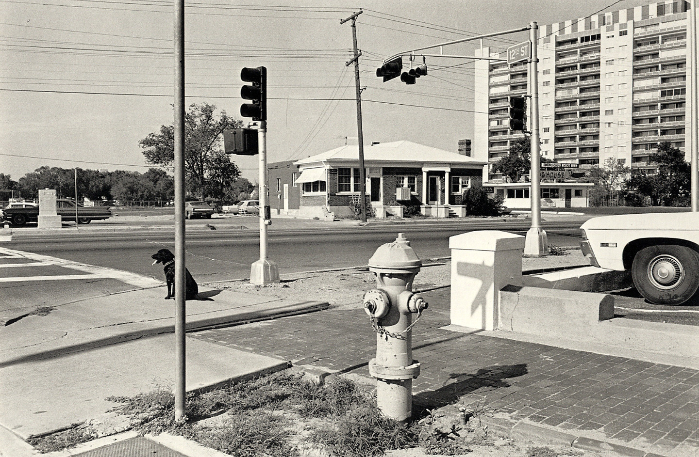
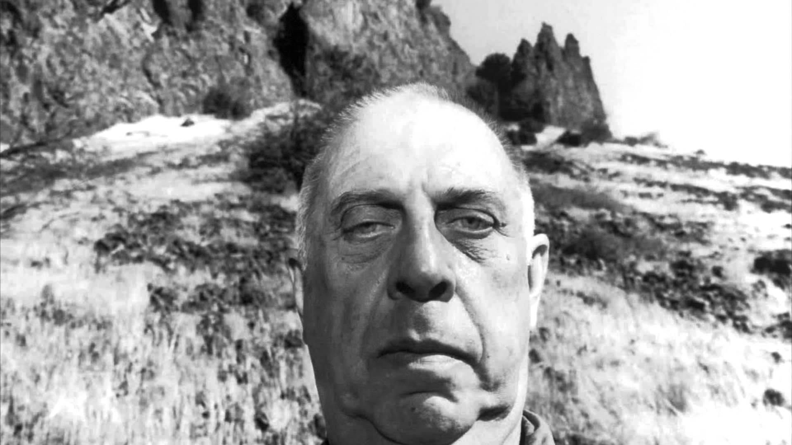
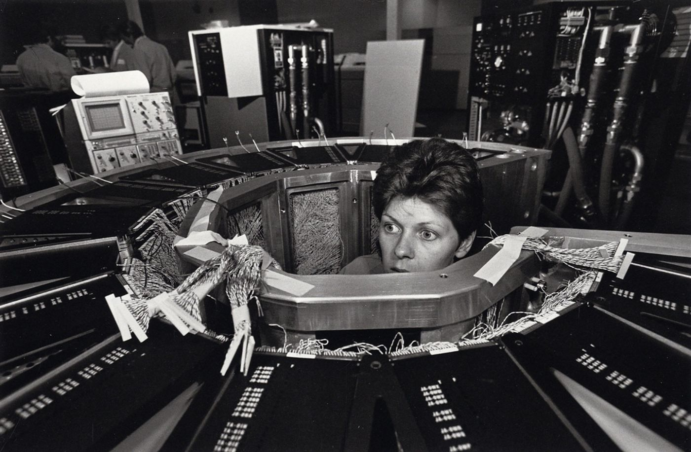
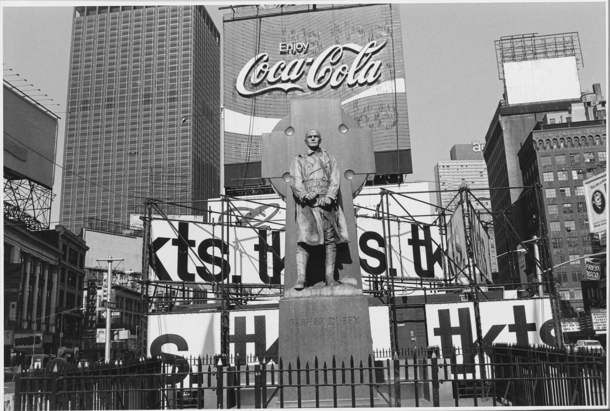
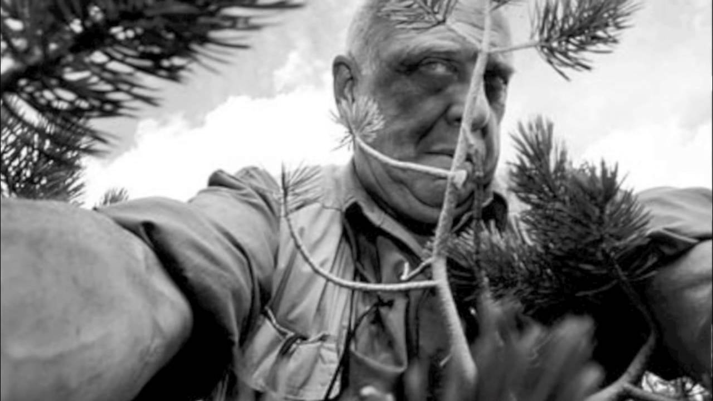

摄影大师印象（六）—— Lee Friedlander
Friedlander大半辈子都在拍照，恐怕现在还在拍。他是个真正的无所不拍且都拍得极好的摄影大师，裸女、社会景观（好像是由他提起的这个词，感觉和几十年前沃克·埃文斯兴起的新地形摄影很相似，或者说被包含在其中）、风景、自拍，车窗内看世界，旅馆内的小电视都是独立成册的…… 可怕的是我没有他的画册，只能从网上找到很少量的照片。
直接看照片吧。










Friedlander的自拍照不管是花样还是数量都非常的多。在我看来，从没有过一个摄影师如此的全面且各方面都顶尖。他的公路摄影中的社会景观常常是过往理想与当今消费符号的冲突，当今社会城市人际关系的疏离感。自然景观虽然美丽却也被枯乱树枝遮挡。个人自拍中，则凝聚着他的整整一生和感受，虽然没有文字，我们却能看出Friedlander正在做什么，现在什么状态，什么情感。
从我手头的 Friedlander的街头摄影照片来看，Friedlander不喜欢和街头人物过于亲近，他喜欢和他们保持相当的距离，并用环境构图来显示街头自身。
有人说Friedlander的构图随意，我真不知此话从何谈起。比他如此讲究构图和善于构图的摄影师恐怕寥寥无几，甚至可能是屈指可数的。他明晰照片作为一种瞬间的平面产物与现实立体不同的特点，针对这特点他对于自身、眼前的影像，镜子类反射的拍摄者背后的影像、以及前中远景进行一系列的重组。在车窗外的世界系列中表现最为明显，我们可以看到Friedlander通过车门，后视镜对当前荒凉且缺少看点的景象进行重组，展现其庞大的重组和构图魔力。其中车门对景物进行分割，反光镜反射的景象试图与真正用肉眼直接看到的景象进行合成。这些照片并不是表现现实的世界是怎样的图景，而是独立成形，成为Friedlander的摄影语言。从某种意义上来说，照片中的世界甚至和拍摄时的那个真实的世界无关，而是独自成为了一个世界。从这个独自世界里去看、理解就构成了当代摄影。本系列介绍的所有大师几乎都是如此。
题外话：意外的发现，Diane Arbus，Gary Winogrand，Lee Friedlander当时是被同一人——纽约现代艺术馆摄影部主任John Szarkowsk慧眼识珠，力排众议，于1967年在新纪实摄影展向主流世界展览介绍的。这三位大师都是我心目中的顶尖大师！John Szarkowsk大概是顶尖伯乐吧！
差点忘说了，Lee Friedlander拍过两本裸女照片书。在国外二手书网站Abebooks上可以买到很便宜的。我之前只随便看过几张，感觉并不喜欢，感觉大部份好像在套布列松几何构图一样，感觉很生硬，根本不是Friedlander的水平。好友 saintjoe （微信号：saintjoe）有天跟我说起Friedlander的这些裸女图，他说感觉充满了张力。当我再回头看时，不禁感到震撼。确实不是简单的几何构图，而是确实突出了女人人体的力量，画面饱满，爆炸与柔美并存。